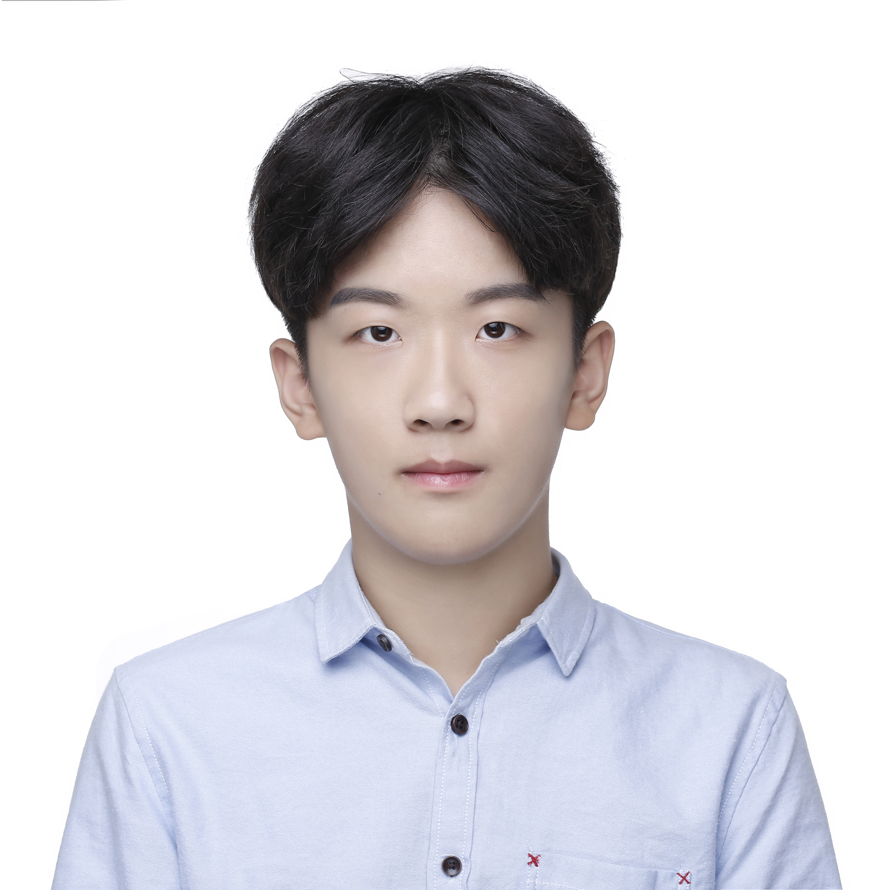

Tianchen Song
EDUCATIONAL BACKGROUND
University of Nottingham, Ningbo, China 09.2018-07.2022
Bachelor of Engineering in Electrical and Electronic Engineering |
Overall GPA: 3.89/4.0 | Dean’s scholarship (2021.12)
Johns Hopkins University
09.2022-06.2024
Master of Science in Engineering in Robotics
PAST PROJECTS
- Autonomous Delivery Vehicle
-
Designed the mechanical structures for package storage and sensors integration.
-
Implemented a deep learning model in PyTorch to drive real-time RGB-D camera frame segmentation
to detect the collision-free space for obstacle avoidance purpose on NVIDIA
Jetson; further enhance system robustness by integrating radar and ultrasonic sensor data.
-
Developed a signal conditioning system on ROS to extract, process, and fuse raw data from an array of sensors, including
GPS module, radars, IMU, wheel encoders, RGB-D cameras, and ultrasonic sensors.
-
Fused the GPS and IMU data using Kalman filter to obtain a continuous position estimation.
-
Developed a local path planning algorithm for obstacle avoidance,
with a focus on multi-sensor data fusion and utilize A* algorithm for global path finding.
-
Developing the delivery service functionality and human-robot interaction for delivery service using.
- Line following robotic vehicle
-
Designed the PCB of H-Bridge motor control circuit in KiCad to integrate an array of electronic components,
including MOSFET driver, MOSFETs among other peripheral equipment, followed by soldering, wire connection,
and hardware test.
-
Enabled recognition of traffic light and road signs based on an array of classical computer vision algorithms
implemented in C++ using Raspberry Pi and OpenCV API, with a focus on navigating through a preset route while performing
various dynamics maneuvers following model road signs.
-
Enabled remote monitoring and control of the robotic vehicle via an Arduino-based controller using a pair of wireless modules nrf24l04.
-
Built and parametrically optimized a PID controller to improve the line-tracking performance.
-
Indoor autonomous vehicle
-
Utilized DWM1000 UWB compliant wireless transceiver module to enable indoor
localization with a precision of 10 cm, range of 100m,
and data transmission rate of 6.8 Mb/s and utilize A* algorithm for global path planning.
-
Converted the PyTorch model for collision-free space segmentation to TensorRT
inference engine to get about 3 times faster real-time performance on Jetson board.
-
Developed a suite of control algorithms in Python to enable real-time steering,
speed control and path-finding based on sensor data;
perform microcontroller unit programming in C; develop the system based on ROS mainly in Python.
-
uild a GUI in Swift general-purpose programming language for monitoring
and controlling the robot through Bluetooth on an iOS device.
- Deep Learning for Medical Image Segmentation
-
Redesigned the U-Net to output desired image size.
-
Tested the impact of padding and dropout in convolutional layers on prediction accuracy.
-
Experimented with the elastic deformation method for data augmentation, the overlap-tile strategy for seamless segmentation,
and the Adam optimizer for improved convergence rate.
PROGRAMMING LANGUAGES
| C/C++ |
⭐️⭐️⭐️ |
| Python |
⭐️⭐️⭐️⭐️⭐️ |
|
MATLAB
|
⭐️⭐️⭐️⭐️
|
|
| Verilog |
⭐️⭐️ |
| Html/CSS |
⭐️ |
|
Swift
|
⭐️
|
|